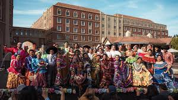

What is traditional folkclorico?
Known in spanish as baile folkclorico, is in uniform a variety of traditional dances. Baile in practice is a hsitorical storyteeling that implements regional culture. The baile is very popular in countries such as Mexico, to which my group drives alot of influence from.
As stated many different countries have their own folkcloric dance, howver it is significant to not generlize certain countries. Moreover, within that country or region the type of baile can vary. In Mexico there are 32 different states, so in retrospect there more than 32 regional dances in Mexico alone. Folkclorico is a significant cultural practice as it is often performed at parties, competetions, and even for government officials.
Our Purpose
GFUSC's motivation is to promote diversity and provide a voice for the latinx and hispanic communities on campus. We want USC to represent the communities inside and outside of its walls. In addition, it is important to recognize the insistitution as it has been built on the communties that it benefits from. It is our mission to make space for others like us but also to bring awarness to our presence.
Furthermore, as an artform and practice us performing and receiving exposure preserves this culture as well as the indigenous roots. This is an artform and while many times art is not taken seriously, we want to demonstrate artistic freedom.
How does it look like?

Firstly, like I mentioned above this baile is performed in several different contexts. Therfore, the garments and stying changes. Because there are many different regions the garments you wear are all different and tailored to the cultural representations of that certain region. In the image proved, you can see a white lace dress. The reasoning behind this is because of it coastal location as more beachy type clothing. Every form of clothing is subject to its surroundings and historical influences.
Similar to the garments, the movement in baile folkclorico is significantly different. This all has to do again with the location and historical influences of the region. One region may be very large exaggerated movement while another is quiet and technical. All movement is different and storytelling of the place it comes from.